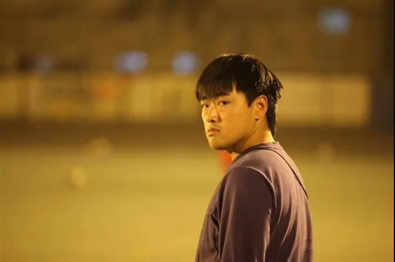
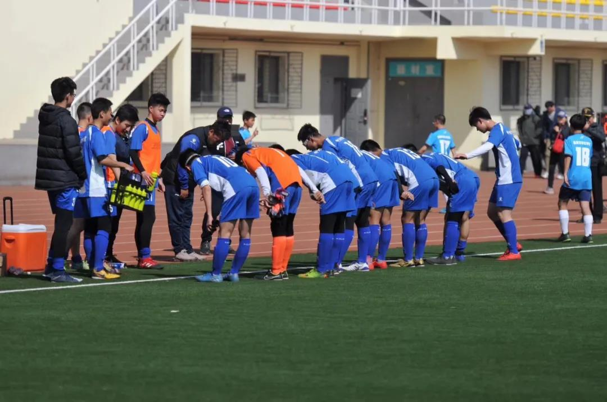

对话“北大附中第一帅” | 足球是我的一种生活
采访人： 王雅尔 李嘉和 陈奕如
原创 BDFZ bdfz口述史 2020-10-26
收录于话题
#北大附中口述史7个内容
#足球俱乐部1个内容
足球俱乐部的这份工作对你来说意味着什么?
我觉得它会是我最后到墓碑上的一个重要文字组成部分，代表着我的过往。它跟我儿子一样重要，是我的一种生活。”

英姿飒爽的刘哥
| 采访 | 孙莹，博雅学院口述史人文项目指导老师 |
| 口述 | 刘世哲，北大附中足球俱乐部总教练，人称“刘哥” |
采访时间：2020/9/29
Q：为什么每次自我介绍都说“党员、已婚、有子、北大附中第一帅”？
A：其实我这么介绍自己是因为我没什么可介绍的。我觉得把我概括下来也就这四点。结婚了，有孩子，党员，“北大附中第一帅”虽然是自封的，但是现在已经得到了认可。
Q：从自封到得到认可这中间是怎么做到的？
A：我逼他们做到的。
Q：我听说你会让学生在朋友圈发“刘哥最帅”，来获取过评成绩，这是真的吗？
A：是真的。事情是这样的，大家知道咱们学校的分是绝对评价，有可能学生最后成绩是94.7，差零点几分没上去，学生觉得很可惜，我也觉得很可惜。那我就会用一些其他的方法，比如发朋友圈说我帅，集赞等。我觉得这是一个双赢的过程，一个是对我的课程的宣传，另一个也说明他努力了。然后我就会把那零点几分加上去。但是如果差太多是不可以的。
Q：你是从什么时候开始踢球？
A：四岁，就我儿子现在这么大。
Q：一开始踢球是什么感觉？
A：我很喜欢。但后来踢到一定年龄就不喜欢了。所以现在我除了上课和带训练，因为这是我的工作，需要养家糊口，我才接触足球，其他时间我都不愿意接触足球。
Q：踢到什么时候不喜欢了？
A：那个年龄段就感觉没有挑战就不喜欢了。感觉如果一直踢下去能看到自己退休的样子。年年比赛、训练，训练、比赛……
Q：能大概说一下你踢球的时间线是怎样的吗？
A：踢球的过程就是小时候放到足球学校，我们那边的足球学校其实跟普通学校是一样的。上午有文化课老师讲课，下午比赛，晚上比赛，第二天起床，上文化课，比赛，比赛。但每天训练和比赛就会很累，第二天上午文化课基本上就是在睡觉，感觉自己的文化课就会有很多缺失。
我记得很小的时候，大概七八岁吧，可能冬天六点钟就起来了，然后背一个球，那时候还是用网兜装的，我记得我妈用毛线给我织了一个球网。然后就下去颠球，颠完5000个去吃早饭。我印象特别深，每天就为了早上吃一口热乎饭，我就起特别早去颠球。这样差不多一年就学会颠球了。我的童年就是这样一个过程。没看过动画片，没有玩具，我小时候唯一的游戏就是你追我我追你，那时候也没有手机。都是很简单的游戏，比如你在前面走，我突然拍你一下，我说我把精神病传给你了，然后就跑，你就追我，满大街跑，要把精神病传给我。
Q：你是哪里人？
A：吉林长春。
Q：四岁开始踢足球，几岁上小学？
A：七岁。
Q：那四岁到七岁之间在干什么？
A：踢球。我五岁开始学做西红柿炒鸡蛋。因为那时候家里条件不太好，父母要上班，我自己在家，就得自己给自己做饭。那时候运动学校一放假，生活只能自理。
Q：上足球学校之前也有在上兴趣班是吗？
A：对，足球兴趣班。因为那个时候，房子还是国家包分配，尤其是在东北，所以那个院里都是一个单位的。院里就有老头老大爷发挥余热，那时候还没有广场舞，老大妈可能会围成一圈当球场，我们就在里面踢。老大爷就领着我们踢。那时候车都很少，院子里基本上都是树，然后挨家挨户种点地，我们就在地上踢球。
Q：小学之后也一直还在上足球学校吗？
A：对，有时候会去学校领校服，但大部分时间都是在训练、比赛。我踢足球的时候正是中国足球最火的那个年代（90年代）。
后来受伤之后就准备考学，就觉得足球是青春饭，得为以后考虑。正好原来有一些运动成绩，那时候大学正好也放开对退役运动员的招生政策，我趁这个契机就去了。然后念了大学四年，学了很多知识。
Q：你是什么时候受的伤？
A：高二。那时受了很严重的伤，就是踢比赛的时候，我的头撞了别人的头，然后我的鼻血就一直不停，把两个鼻孔堵住之后血会从嘴出，我的鼻中隔完全碎掉了。然后住院时体重就疯长，涨到快180多，也跑不动了。最关键是受伤了你会有阴影，比赛时再有用头的时候就不敢去跳了。索性那时候就开始自谋出路。
Q：从四岁到高二的这段足球生涯里，您是如何参加比赛的？是校队还是俱乐部？
A：在一个俱乐部里，没有固定的教练与队友，前期发展很不职业，就经常在换，那时候不太有俱乐部的概念。
Q：可以讲讲你的比赛经历吗？
A：打过一次吉林省的冠军，那次经历特别有意思。好多人晚上在一起住，每次打完比赛回到宿舍的那段时间，是我们觉得每天最开心的时候。晚上我们会打水仗，用喝的矿泉水瓶在厕所接了水，满屋子来回泼。不管再累，那种玩心一上来都体会不到。第二天冻得不行，因为被褥全湿的。后来查寝就说不能打水仗。我们就讲鬼故事，在人脸前放一面镜子，然后打着手电，把灯关了照自己的脸。然后就讲什么每个人都有人生三盏灯，十二点之后不要回头，回三次头就会看到鬼等。就觉得在一起玩感觉很开心，那时候就已经不太愿意比赛了，感觉很需要朋友。

比赛后，师生鞠躬致谢
Q：后来是怎么来到北大附中的？
A：2010年，我大学毕业，正好赶上附中改革，需要专项的老师。过去的体育课是一个老师带四十多人，然后放一个球大家一起玩，后期就变成一个专项教学，就需要足球老师。那时候我们教练推荐了一个人过来，但没选上，然后我就又过来试一下，就选上了。当时是体育馆的馆长于万达老师面试的。
那会儿聊到教育，我觉得我就特别有远瞻性，当时我就跟学校提出俱乐部制度，包括梯队制度。我就是想把我原来的职业生涯的经历放到学校里。然后紧接着试运行了几年之后发现国家开始推校园足球，其实跟我之前的想法是一致的。所以我就觉得现在做起来很顺。包括现在看起来学校足球俱乐部的人很多，因为这也是一种变相宣传。我会强迫他们在学校里穿一些俱乐部印的东西，这样会让他们感觉这个俱乐部更有氛围，然后基数越来越大，就越来越容易出成绩。出了成绩越来越好，招的人就越多越好。
Q：足球俱乐部的课是各个书院混选？
A：是，我这里稍微另类一点，我是有四个队，但三个队已经是提前选拔完了，只会放开足球三队的课给大家选。（指的目前的选课）
Q：我很好奇，你怎么会那么了解各书院的情况？
A：因为我原来没怎么上过学，所以我很珍惜在学校的时间。我没有课的时候就跟学生一起去上课。我跟一个当时的学生他们班上了一年的数学课，跟他们一起做卷子，然后从最开始我们两个什么都听不懂，不及格，我跟他们一起考，考的特别烂，他们就笑话我。我就很要脸，我那个时候就用作业帮、小猿搜题，百度去学习，恶补了一下，后来我和他都名列前茅。
Q：你是从什么时候开始做导师？
A：我是今年开始做导师。我发现做导师太惨了。导师是一个变态的父母，因为我只有5个学生，我就会很关心他们。包括中午吃的好不好，辣不辣这种。所以我感觉我做的特别变态，发现导师的活儿特别不好干。如果学生不听话我就快疯了，如果他们听话，我更疯了，因为我没事干。我就是要帮着他们不走弯路。
Q：什么是弯路？
A：弯路从官方角度来讲，就是不犯罪，能学以致用，考上大学，以后能结婚生子，繁衍下一代，我觉得这就是不走弯路。
从我的理解就是你要把钱花刀刃上，因为父母挣钱不容易。我小时候我的母亲每个月220块钱，我父亲400多块钱，应该93、94年，那时候我就对钱特别有概念，后来就自己挣钱。我是1987年出生。
Q：足球俱乐部是个怎样的招生、运行模式？
A：其实我们招生时间很短，大概就是我们在一起踢球，我的习惯是我从来不会去指派任何事。所有东西都是随机，然后规矩都是慢慢去养成的，都是由老的队员去带。所以每次选拔我都会站到一个角落去观察。然后给大家半个小时的时间自由去发挥。基本上有的孩子踢球看一眼你就知道他会踢还是不会踢。有的可能不会踢，但他的态度和他对球的思考特别好的话，我也会要。到后期，主要就是慢慢往下刷人品。
Q：怎么刷人品？
A：我会翻看每个人的朋友圈。我在招生的时候可能就先选50个人，最后留下30个人，那20个人就是朋友圈不吸引我。
Q：什么样的朋友圈吸引你？
A：他又喜欢足球，又情窦初开。这很正常，因为你到了这个年龄段，可能除了学习，就是要谈情说爱，我觉得这个年龄段不发生这个年龄段该有的事，你可能就是思想有问题。
还有他对父母的态度，就看他的朋友圈有没有一些关于父母的东西，如果没有父母我指定不要他。
Q：你会喜欢俱乐部里面什么样的小孩？
A：长得好看，头脑聪明。
Q：怎么叫头脑聪明？
A：我会画线路图，然后就往那儿一放，我就说大家看一下，看懂了就开始练，然后好多同学就过来看，有的人看5秒钟就去练了，有的看1分多钟还在分析，我觉得这就是脑子不太灵光，应该是被原来的老师束缚了思想。
Q：北大附中的学生在体育运动这方面整体的能力如何？
A：整体水平在逐年的严重的下滑。因为父母溺爱吧。过去的孩子不听话，我原来习惯手里有一个小棍，他会玩命去练，特别认真。我其实也不打他们，这个棍主要是有个威严在，我平时就是拄着，因为站久了也累。但现在孩子就会自己给自己找借口。大家可能特别感同身受的一点是遇到了困难不是去找解决的办法，而是去想有没有别的路。我觉得这是这个时代的产物，过去是遇到南墙不回头，就翻过去。现在就是遇到南墙就换另一条路。我觉得可能跟父母溺爱有很大关系。因为现在大部分的家长都是第一代的独生子女，他们对孩子的想法就是给最好的。
Q：听说今年学校加大了校队的训练，是出于一个什么样的考虑？
A：其实每周五的加训是从去年开始的，只不过突出了一点是以校队的名义去经常比赛。因为我们从全民运动到现在要拔尖，它是一个过程。我的理解就是课时变多了，运动量变大了，相比于其他学校，我们应该已经做得很顶尖了。
Q：你在附中做老师是什么感觉？有没有感受到包容与暴力执法的两极？
A：我觉得大家是孩子，学校也是孩子，其实学校也需要你去培养它。而且这几年学生提出的反馈和抗议逐渐少了，感觉大家已经被磨平了棱角。我刚来的时候很多事情都是学生自主起义，去完成的。比如食堂的分层，过去是谁跑得快谁吃得好。后来是学生起义形成了现在的局面。北大附中在我看来就是言论自由，可以跟老师去吵、去争执。
Q：那在你的俱乐部里，有学生挑战你，然后让你成长的吗？
A：好多挑战的。
Q：可以具体讲一讲吗？
A：我的足球课其实就是学生创造的。比如项目应该打什么样的分，比如你们经常会面对的男生跑2000，女生跑1500，我的学生就会觉得特别不人道，因为我的体能在这摆着呢，我可能测了是满分，但是我不想测，他就会给我出主意，全班一起讨论通过。比如我可以折返跑，就可以不跑2000，比如我可以测心率带，用一些科学的数据来反驳这种不人道的测试。包括我一些考核内容的梳理也是学生帮我梳理，包括踢联赛的一些活动的规则也是他们制定的，好多玩法也是他们帮我修正的。所以这十年的课基本上都是学生帮我修改完善的。
Q：足球俱乐部的这份工作对你来说意味着什么？
A：我觉得它会是我最后到墓碑上的一个重要文字组成部分，代表着我曾经的过往。它跟我儿子一样重要，是我的一种生活。我特别不愿意学生叫我老师，我就让他们叫我刘哥，我喜欢这种特随意的感觉。
注：本次采访是口述史人文项目的课堂教学内容，老师邀请嘉宾进入课堂并做现场采访，学生需进行采访观摩并写观摩笔记。
我认为此次采访过程总体非常好。前一部分通过询问细节和感受，把受访者的人生经历梳理得十分细致和完整。比如受访者提到高二的时候受伤，采访者就提出要展开讲一讲受伤的情况。后一部分采访中常常追问定义，使得受访者的态度更加明确和具体。如受访者说自己喜欢“头脑聪明”的小孩，采访者即问“怎么叫头脑聪明”；受访者说导师就是帮学生少走弯路，采访者问“什么是弯路”。另外，在答非所问或者跑偏的时候采访者及时强调了重点，如针对北大附中学生整体水平，受访者讲学长制和活动去了，采访者指出“你还是没直接回答我的问题”。
——王雅尔
我觉得这次访谈很有代入感，我真的走进了刘哥这个人。采访者善于从受访者的个人特色“如北大附中第一帅”还有受访者给出的关键词等入手层层深入，引导受访者主动回忆并分享自己的足球生涯和人生际遇。
——李嘉和
我觉得采访人在受访者到达后并没有进行太多的“沟通（简单聊天）”而是直接开始访谈，也能看出受访者在开始一段时间里较为紧张。我记得最开始的问题是“为什么刘哥要以党员、第一帅、已婚、有子作为自己的自我介绍”，在我看来这是一个很棒的切入话题，但不是我所想象的闲聊式的“简单沟通”。受访人并没有对此详细地做出解释，我觉得这是在受访人还在紧张时期回答的问题，若是放在较为靠后的采访我觉得可能会得到更多的回答。
——陈奕如